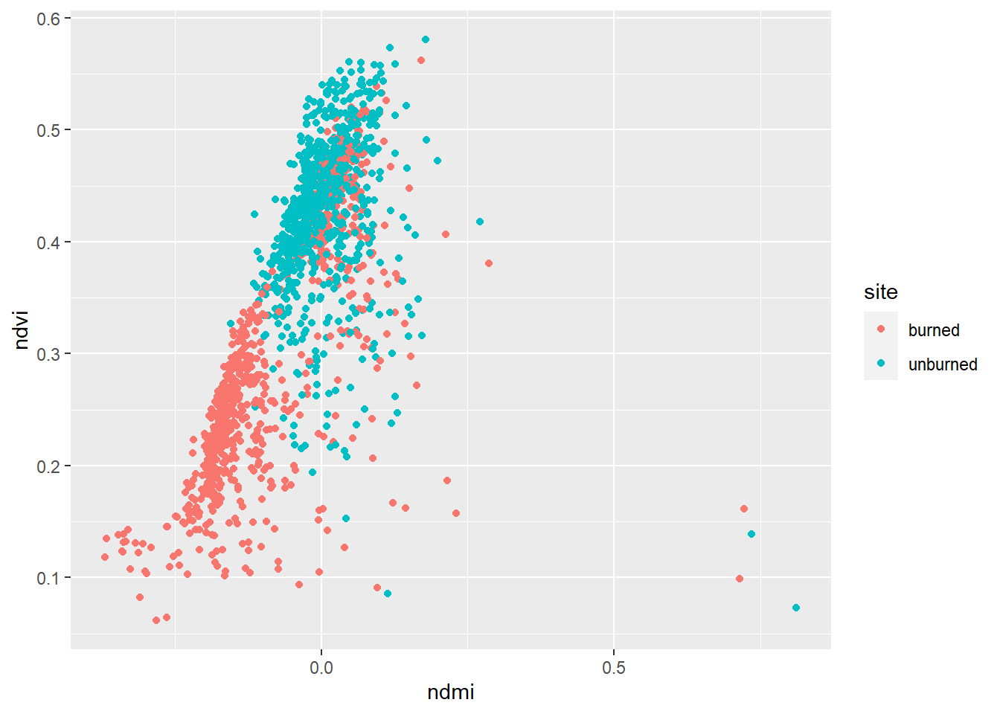
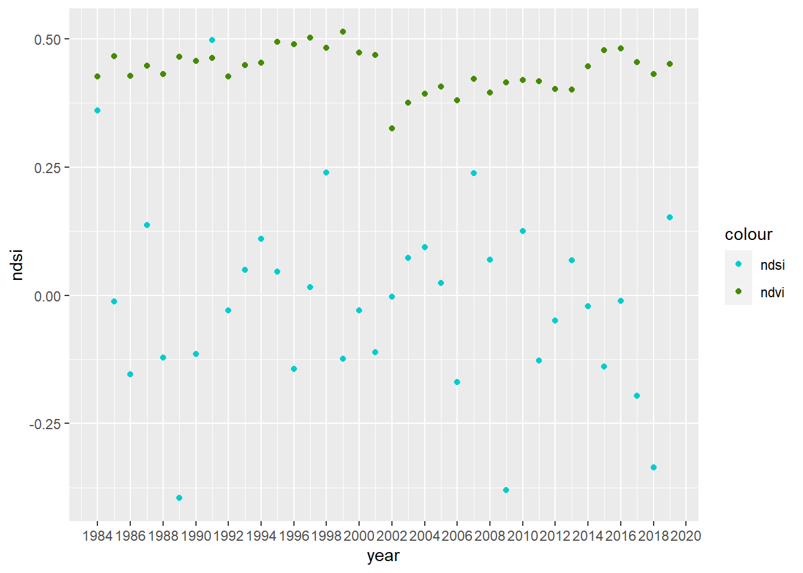

Chapter 2 Hayman Fire Recovery
####-----Reading in Data and Stacking it ----- ####
#Reading in files
files <- list.files("./02-data", full.names=T)
# If run from line, lowest directory: need ../ | If run from console, base directory at .Rproj
paste(files)## [1] "./02-data/hayman_ndmi.csv" "./02-data/hayman_ndsi.csv" "./02-data/hayman_ndvi.csv"#Read in individual data files
ndmi <- read_csv(files[1]) %>%
rename(burned=2,unburned=3) %>%
mutate(data='ndmi')
ndsi <- read_csv(files[2]) %>%
rename(burned=2,unburned=3) %>%
mutate(data='ndsi')
ndvi <- read_csv(files[3])%>%
rename(burned=2,unburned=3) %>%
mutate(data='ndvi')
# Stack as a tidy dataset
full_long <- rbind(ndvi,ndmi,ndsi) %>%
gather(key='site',value='value',-DateTime,-data) %>%
filter(!is.na(value))2.1 Question 1)
What is the correlation between NDVI and NDMI? - here I want you to convert the full_long dataset in to a wide dataset using the function “spread” and then make a plot that shows the correlations a function of if the site was burned or not (x axis should be ndmi) You should exclude winter months and focus on summer months
wide_long <- spread(full_long, key = "data", value = "value") %>%
mutate(month = month(DateTime)) %>%
filter(month %in% c(5:9))
ggplot(wide_long, aes(ndmi, ndvi, color = site)) + geom_point()## Warning: Removed 19 rows containing missing values (geom_point).
2.2 Question 2
- What is the correlation between average NDSI (normalized snow index) for January - April and average NDVI for June-August? In other words, does the previous year’s snow cover influence vegetation growth for the following summer?
# Group by year (early NDVI / late NDSI). Compare the different years, not months ##Got help with this question on Monday, did not have the chance to complete it (02-07-2022)
# Filter and prepare data to be aggregated by month, year.
wide_early_ndsi <- spread(full_long, key = "data", value = "value") %>%
mutate(month = month(DateTime)) %>%
mutate(year = year(DateTime)) %>%
filter(month %in% c(1:4)) %>%
select(site, ndsi, month, year) %>%
group_by(month, year)
wide_late_ndvi <- spread(full_long, key = "data", value = "value") %>%
mutate(month = month(DateTime)) %>%
mutate(year = year(DateTime)) %>%
filter(month %in% c(6:8)) %>%
select(site, ndvi, month, year) %>%
group_by(month, year)
# Aggregate data values for ndsi/ndvi by year
ndsi_yearly <- aggregate(ndsi ~ year + site, wide_early_ndsi, FUN = mean)
ndvi_yearly <- aggregate(ndvi ~ year + site, wide_late_ndvi, FUN = mean)
# Combine data for plotting
total <- full_join(ndsi_yearly, ndvi_yearly)## Joining, by = c("year", "site")# Plot of the data, color by type (ndvi, ndsi)
ggplot() + geom_point(data = filter(total, site == "burned"), aes(year, ndsi, col = "ndsi")) +
geom_point(data = filter(total, site == "unburned"), aes(year, ndvi, col = "ndvi")) +
scale_x_continuous(n.breaks = 20) + scale_color_manual(values=c("cyan3", "chartreuse4"))
cor(total$ndsi, total$ndvi)## [1] 0.1813135Snowfall has a weak short-term impact on the later seasons vegetation index. We can see in the graph that years with lower snow indexes over a longer period cause a small change in the NDVI in the future years.
2.3 Q3
How is the snow effect from question 2 different between pre- and post-burn and burned and unburned?
Significantly lower snow is detected in the initial post-burn area. From the graph, we can see that the index values drop significantly initially, the recover over the course of about 4 years.
2.4 Question 4
What month is the greenest month on average?
# Month with highest NDVI on average, rename months
ndvi_monthly <- aggregate(ndvi ~ month, wide_late_ndvi, FUN = mean) %>%
mutate(month = month(month, label = TRUE, abbr = FALSE))
# Find max index
max_ndvi <- which.max(ndvi_monthly[,2])
# Print max index month name
print(paste(ndvi_monthly[max_ndvi,1], "is the greenest month on average."))## [1] "August is the greenest month on average."2.5 Question 5)
What month is the snowiest on average?
# Month with highest NDSI on average, rename months
ndsi_monthly <- aggregate(ndsi ~ month, wide_early_ndsi, FUN = mean) %>%
mutate(month = month(month, label = TRUE, abbr = FALSE))
# Find max index
max_ndsi <- which.max(ndsi_monthly[,2])
# Print max index month name
print(paste(ndsi_monthly[max_ndsi,1], "is the snowiest month on average."))## [1] "January is the snowiest month on average."